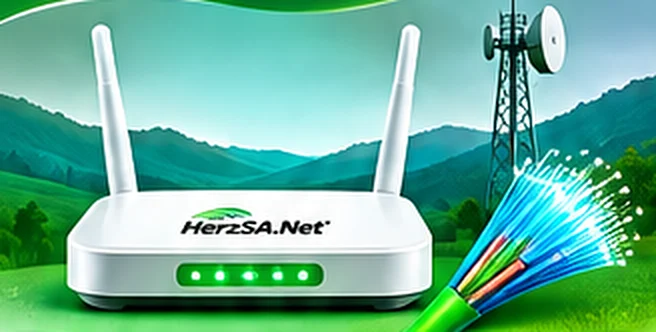

Internet HerzSA.Net
Para servicios de fibra óptica y de radioenlace.

Diagnóstico básico
- 1Verifica que el equipo de HerzSA.Net (módem, terminal de fibra o adaptador de la antena) y tu router estén conectados a la corriente y encendidos.
- 2Revisa que los cables estén bien conectados y sin dobleces o daños visibles. En fibra óptica, no dobles ni desconectes el cable de fibra.
- 3Apaga el equipo de HerzSA.Net y tu router, espera 30 segundos y enciéndelos de nuevo. Espera unos minutos a que se estabilicen.
- 4Prueba en más de un dispositivo. Si solo uno falla, el problema puede estar en ese dispositivo.
- 5Si tienes radioenlace, revisa si hay lluvia intensa, viento fuerte u obstáculos nuevos (árboles, construcciones) frente a la antena. No subas al techo ni manipules la antena.
Tengo Wi-Fi pero no hay Internet
Reinicia el equipo de HerzSA.Net y tu router como se indica en el diagnóstico. Si continúa, puede tratarse de una falla en la red; repórtala a soporte.
El Internet está lento
Acércate al router o prueba con un cable de red. Muchos dispositivos usando video al mismo tiempo pueden reducir la velocidad disponible para cada uno. Si la lentitud es constante, repórtala indicando el horario en que ocurre.
Olvidé la contraseña de mi Wi-Fi
Contacta a soporte para que te ayuden a recuperarla o cambiarla. Por seguridad se verificará que seas titular del servicio.
¿Qué datos debo tener a la mano al reportar?
Nombre del titular, localidad, tipo de servicio (fibra o radioenlace), desde cuándo ocurre el problema y qué pasos ya realizaste. No compartas contraseñas ni datos bancarios.